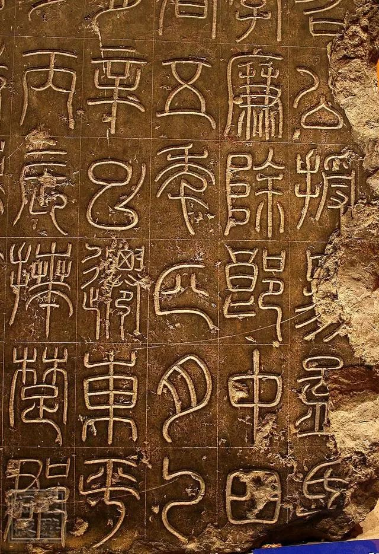

《袁安帖》

袁安帖》东汉篆书碑刻。全称《汉司徒袁安帖》。东汉·永元四年(92)立。碑石已残，每行末一字及碑额均已损佚，现存碑石高1.39
米，宽0.73米，文共十行，满行存十五字，有穿在五六行之间、正当碑中。现藏河南省博物馆。此石原出土地不详，明万历间(1573～
1619)被人移置河南偃师县辛村(城南三十里)村东牛王庙用作供案。因字在下面，无人知为碑刻。1929年初，庙改为辛村小学。次年夏，
一小孩仰卧石案下乘凉，发现石上刻有字迹，村人任继斌遂以拓本行世。近时有翻刻本。有影印本行世。
汉代传世篆书碑刻为数甚少，著名的除《少室神道阙铭》、《开母庙石阙铭》和《祀三公山碑》之外，便是这两块碑了。《袁安帖》
为近世所出篆书碑之最完整者，字字锋颖如新，界格完好可见。二碑篆书屑小篆，结体宽博，笔画较《泰山刻石》为细瘦，骨力劲拔而有
弹性。运笔圆匀，所存之字笔画皆极清晰，为学篆者取法善本。
释文:
司徒公汝南女陽袁安召公，授《易》孟氏〔學〕。永平三年二月庚午，以孝廉除郎中。四〔年〕 十一月庚午，除給事謁者。五年四月
乙□， 遷東海陰平長。十年二月辛巳，遷東平〔任〕 城令。十三年十二月丙辰，拜楚郡〔太〕 守。十七年八月庚申，徵拜河南尹。〔建〕
初八年六月丙申，拜太僕。元和三年五〔月〕 丙子，拜司空。四年六月己卯，拜司徒。孝和皇帝，加元服，詔公為賓。永元
四年〔三〕 月癸丑薨。閏月庚午葬。